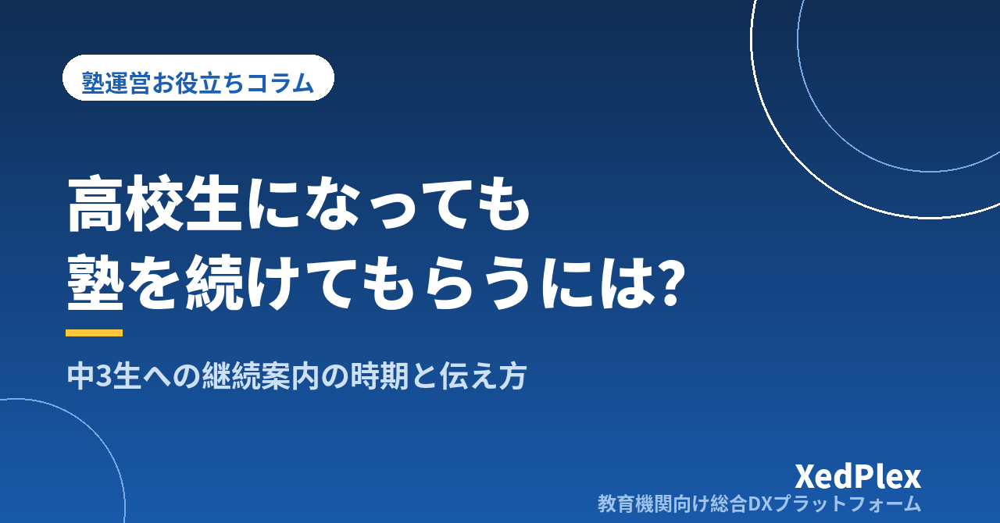

中3生の受験後、高校生になっても塾を続けてもらうには？｜継続案内の時期・伝える内容・「高1の春の空白」をつくらない段取り

「合格の報告に来てくれて、そのまま『お世話になりました』で終わってしまった」「春休みが明けたら、中3の生徒がほとんどいなくなっていた」——個人塾の塾長から、毎年この時期になるとこうした声を聞きます。1年かけて受験に伴走してきた生徒だからこそ、高校に入ってからも力になりたい。けれど、受験前に継続の話をするのは気が引けるし、受験が終わるとあっという間に春休みが過ぎてしまう、という方も多いのではないでしょうか。
中3生の多くが受験後に卒塾するのは、塾の指導に不満があったからとは限りません。「高校生になっても通う」という選択肢が、ちょうどよい時期に、具体的な形で示されていないことが原因になっている場合がよくあります。この記事では、高校生の受け入れ条件の決め方から、秋の面談から入学後までの継続案内の段取り、伝える内容と文例、卒塾する家庭との関わり方までを整理します。
中3生が受験後にそのまま卒塾していく3つの理由
受験後の卒塾が続くとき、多くは次の3つのどれかが重なっています。
- 「受験のための塾」として役目を終えた感覚がある：保護者も生徒も、塾を「合格するための場所」と捉えていると、合格した時点で目的を果たしたことになります。
- 高校生活の見通しが立たず、判断を先送りにしている：部活動、通学時間、課題の量などが分からない段階では、「落ち着いてから考えます」となりやすく、そのまま通わない状態が定着します。
- 塾からの案内が遅い・具体的でない：高校生の時間帯や料金、どんな指導をするのかが示されないまま入学を迎えると、保護者には比べる材料がありません。気づいたときには別の塾や学習サービスを選んでいる、ということも起こります。
つまり、継続してもらうために必要なのは強い勧誘ではなく、「高校生になっても通うなら、こういう形になります」という情報を、判断できる時期までに届けておくことです。
案内の前に決めておく「高校生の受け入れ条件」
案内を出す前に、塾として高校生をどう受け入れるかを決めておきます。ここが曖昧なまま話をすると、保護者からの質問に答えられず、かえって不安を与えてしまいます。
| 決めること | 検討のポイント |
|---|---|
| 対応できる科目と範囲 | 数学・英語のみ、定期テスト対策中心など、無理なく対応できる範囲を正直に決める。講師が担当できない科目は扱わない |
| 指導の目的 | 定期テスト対策、学校の課題の消化、苦手科目の立て直し、学習習慣の維持など、何を中心にするかを示す |
| 通塾できる時間帯 | 部活動後の遅い時間帯に対応できるか。終了時刻と帰宅方法の考え方も決めておく |
| 料金と回数 | 高校生の月謝、週の回数の選択肢。中学生からの継続の扱いを決める場合は、内容と期限を明記する（割引制度の決め方） |
| 受験直後から入学までの期間 | 入試後〜3月の授業をどうするか（高校準備講座にする、休塾扱いにするなど） |
特に大切なのは、対応できないことは最初から「できない」と伝えることです。大学受験の全科目を見られるような印象を与えてしまうと、後で期待とのずれが生まれます。小さな塾の強みは、生徒のこれまでのつまずきや性格を知っていることです。そこを軸に、できる範囲を具体的に示すほうが信頼につながります。
継続案内のタイミングは「秋の一言」から「入学後」まで
継続の話は、合格発表後に一度だけするのではなく、受験の流れに合わせて少しずつ伝えていきます。受験前は、生徒も保護者も受験に集中したい時期です。勧誘ではなく「選択肢がある」ことを知らせる程度にとどめます。
| 時期 | 伝えること | ポイント |
|---|---|---|
| 秋の保護者面談 | 「高校生の指導も行っています」と一言だけ触れる | 判断は求めない。受験の話を優先する（面談の時期） |
| 入試直後 | 入学までの過ごし方と、高校準備の案内があることを伝える | 結果を待つ間は、継続の判断を迫らない |
| 合格・進学先の決定後 | 高校生の受け入れ条件をまとめた案内を書面で渡す | 希望する家庭には短い面談を設ける |
| 3月中 | 継続・休塾・卒塾の意向を確認する | 締切日を決め、未回答の家庭には一度だけ確認する |
| 入学後〜最初の定期テスト前 | 休塾・卒塾を選んだ家庭にも、テスト前の案内を送ってよいか確認のうえで知らせる | 高校生活が見えてから再検討する家庭もある |
入試日程や合格発表の時期は地域や学校によって異なるため、教育委員会や各学校が公表している最新の日程をもとに、自塾の予定に落とし込みます（受験期の保護者との情報共有、塾の年間事務カレンダーの作り方）。新年度の名簿や料金の切り替えと時期が重なるので、あわせて準備しておくと漏れが減ります（新年度準備チェックリスト）。
保護者・生徒に伝える内容と文例
「高校で起きやすい変化」と「塾でできること」をセットで伝える
保護者が知りたいのは、高校生になったら何が変わるのか、そのとき塾は何をしてくれるのか、という点です。一般的には、授業の進み方が速くなる、定期テストの科目数が増える、部活動で家庭学習の時間が減る、といった変化が起こりやすくなります。こうした変化を断定的にあおるのではなく、「このような変化が起きやすいので、塾ではこう支えます」と具体的に結びつけて伝えます。
あわせて、これまでの記録を活かせることも伝えられます。中学での苦手単元、つまずきやすいところ、集中が続く時間帯などを塾が把握していることは、新しい塾にはない強みです（生徒記録（日誌）の残し方）。
生徒本人の意思を必ず確認する
高校生になると、通うかどうかを本人が決める場面が増えます。保護者だけと話を進めず、生徒本人とも短く話す時間をとりましょう。「高校でどんなことに力を入れたいか」「部活動は何をしたいか」を聞いたうえで、通い方の選択肢を示すと、本人も考えやすくなります。
保護者の皆さま
このたびは進学先のご決定、誠におめでとうございます。当塾では、高校生になってからの学習についても引き続きサポートを行っています。対象は数学・英語で、学校の定期テスト対策と課題の進め方を中心に指導します。授業は平日○時〜○時の間で、週1回・週2回からお選びいただけます。料金と時間割の詳細は別紙のとおりです。
高校生活の見通しが立ってから考えたいというご家庭は、休塾としてお席を○月末までお預かりすることもできます。○月○日までに、継続・休塾・卒塾のご意向をお知らせください。ご不明な点があれば、短いご相談の時間もお取りします。
案内は、継続・休塾・卒塾のどれを選んでもよいことが伝わる書き方にします。「続けないと高校で困ります」といった不安をあおる表現は避けましょう。
卒塾を選んだ家庭とのつながり方と、次の年への活かし方
手続きは気持ちよく、最終月の請求は明確に
卒塾を選んだ家庭には、これまでのお礼を伝え、手続きをすっきり終えます。最終月の請求や前払い分の扱いは、規定に沿って事前に案内しておくと、行き違いが起こりません（退塾・休塾のルールと手続きの整え方）。
「いつでも相談できる」状態を残しておく
卒塾したあとでも、高校の最初の定期テストや進路選択の時期に「やはりお願いしたい」と戻ってくる家庭はあります。卒塾時に、今後お知らせを送ってよいかを確認し、了承を得た家庭にだけ案内を送るようにします。連絡先などの個人情報は、利用目的の範囲で扱うことが前提です（生徒の個人情報管理の基本）。卒塾した家庭の保護者が、弟妹や知人に塾を紹介してくれることもあります（紹介・口コミで生徒を増やす仕組み）。
継続・卒塾の理由を記録し、翌年の案内を直す
意向を確認したときに、継続した理由・卒塾した理由を短く記録しておきます。「部活動の時間と合わない」が多ければ時間帯を、「高校の科目に対応しているか分からなかった」が多ければ案内の書き方を見直す、というように、翌年の受け入れ条件と案内に反映できます。可能であれば、簡単なアンケートで意見を聞くのも一つの方法です（保護者アンケートの作り方と活かし方）。
まとめ
中3生に高校生になっても通い続けてもらうためのポイントは、高校生の受け入れ条件を先に決め、秋の一言から合格後の書面、3月の意向確認、入学後の案内まで段階的に伝え、継続・休塾・卒塾のどれを選んでもよい形で選択肢を示すことです。卒塾する家庭とも気持ちよく手続きを終え、理由を記録しておけば、翌年の案内はさらに伝わりやすくなります。
まずは、今年の中3生が高校生になったときに「塾として何ができるか」を、科目・時間帯・料金の3点で書き出してみてください。
この記事を書いた運営より
私たちは、個人経営・小規模の学習塾向けに、生徒管理・QRコードでの入退室記録・月次請求・保護者へのLINE/メール通知・AIによる学習支援までをひとつにまとめた教育機関向け総合DXプラットフォーム「XedPlex（ゼドプレックス）」を開発・提供しています。初期費用は0円、料金は生徒1名あたり月額300円（税込）から。生徒50名の塾なら月15,000円（税込）です。全国8つの教室で導入されており、導入塾には紹介ホームページの無料作成も行っています。機能の詳細説明はこちら。
XedPlexの詳細を見る